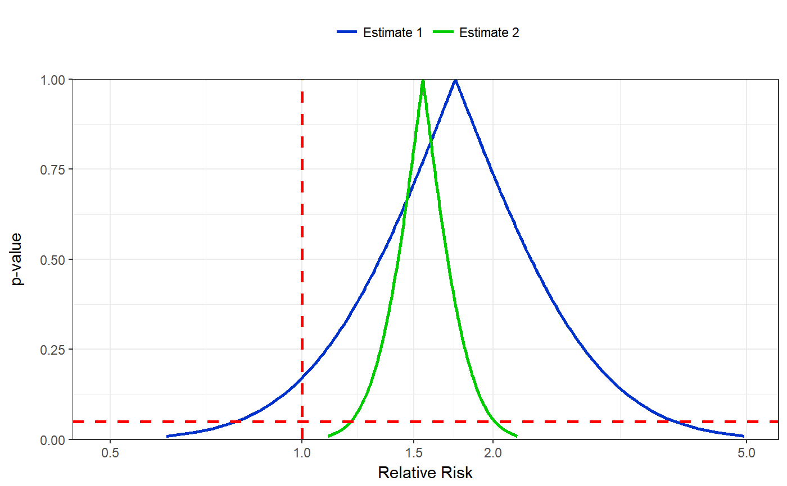

Plot the p-value function for one or two confidence interval pairs. See following for example of the use in the literature: Is flutamide effective in patients with bilateral orchiectomy? Rothman, Kenneth J et al. The Lancet , Volume 353 , Issue 9159 , 1184
pvalueplot(est1.ll, est1.ul, est2.ll = NA, est2.ul = NA, label1 = "Estimate 1", label2 = "Estimate 2", xlabel = "Relative Risk", citype = "95%CI", labelsize = NULL, functionwidth = 1, referencewidth = 1)
| est1.ll | Lower confidence interval of estimate 1 |
|---|---|
| est1.ul | Upper confidence interval of estimate 1 |
| est2.ll | Lower confidence interval of estimate 2 (optional) |
| est2.ul | Upper confidence interval of estimate 2 (optional) |
| label1 | If using two estimates, name the 1st |
| label2 | If using two estimates, name the 2nd |
| xlabel | The x axis label |
| citype | Choose between '95%CI', '90%CI' or '99%CI' |
| labelsize | Change size of labels |
| functionwidth | Change width of pvalue function line |
| referencewidth | Change width of reference lines |
Code repo: https://github.com/epijim/episheet
pvalueplot( est1.ll = 0.9, est1.ul = 12, xlabel = "Relative Risk" )#>pvalueplot( est1.ll = 0.8, est1.ul = 3.8, est2.ll = 1.2, est2.ul = 2, label1 = "Estimate 1", label2 = "Estimate 2", xlabel = "Relative Risk", citype = "95%CI" )#>